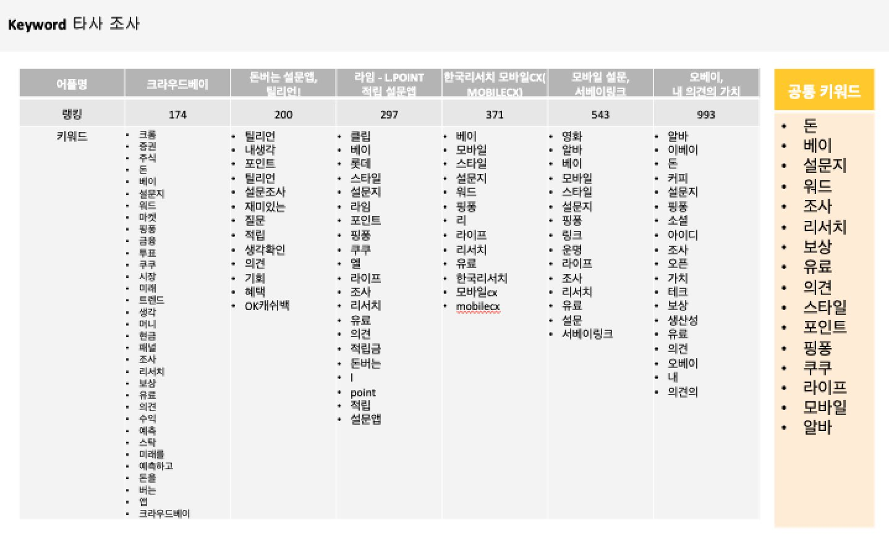
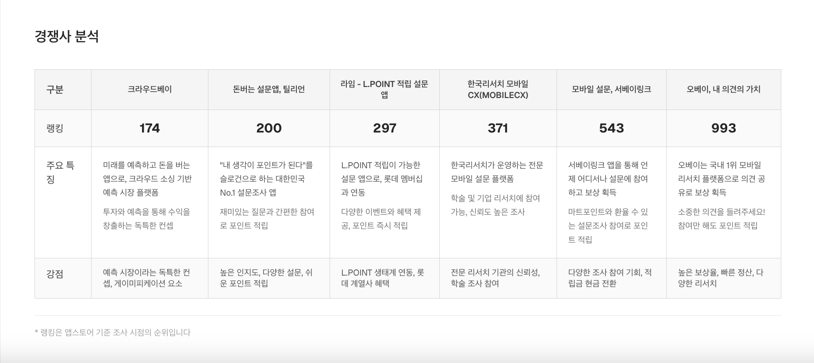
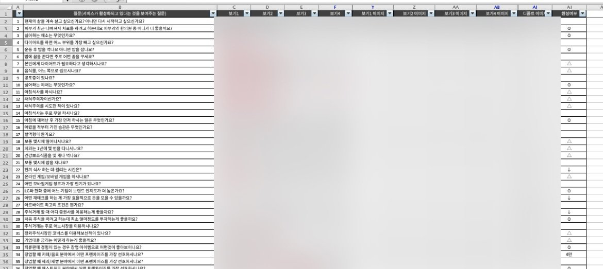
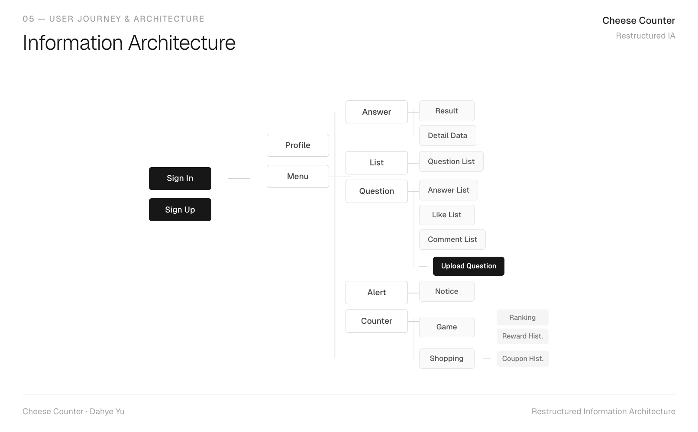
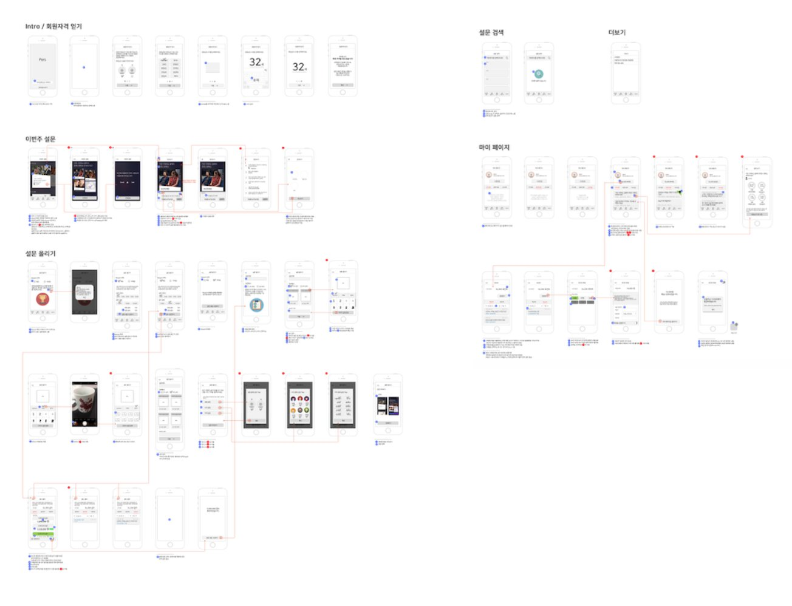
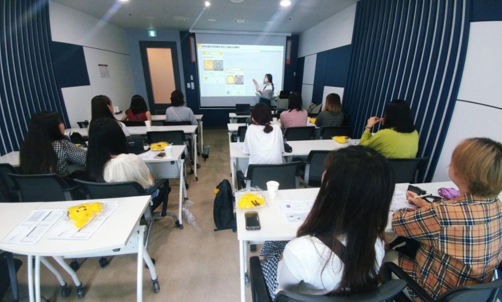
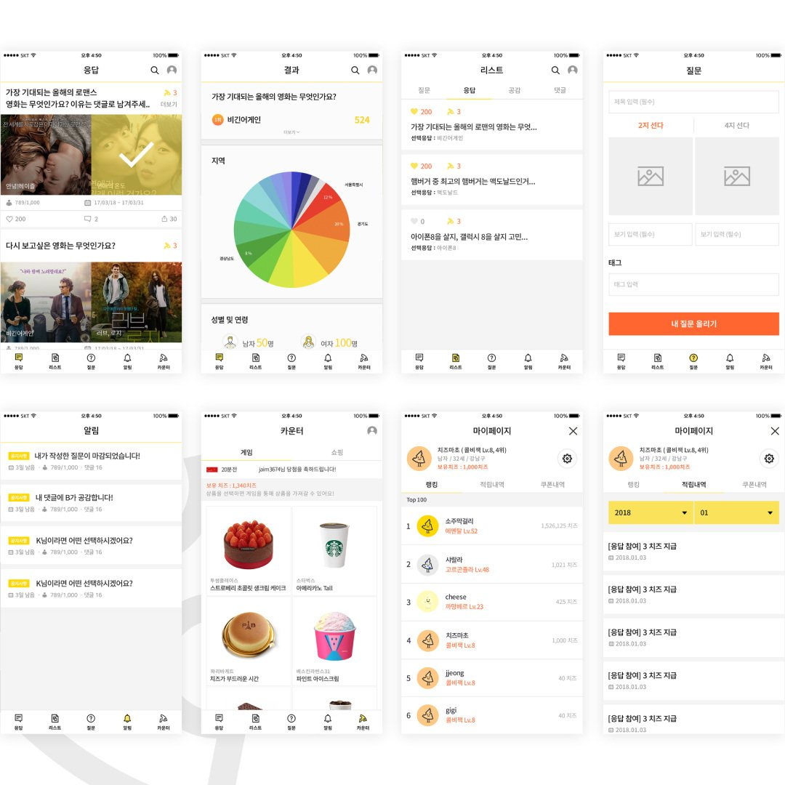

Project Overview
Cheese Counter is a reward-based Q&A platform and South Korea's market leader in survey applications. Users earn "cheese" points by answering questions, redeemable for real-world rewards.
I led the end-to-end redesign over several months, working closely with the engineering team to ship a user-centred product that drove significant monthly growth in new customer acquisitions.
Problem Statement
Despite strong market position, the existing app had three critical pain points limiting engagement and retention.
Competitive Analysis &
Research
I ran a competitive audit across 6 direct competitors — analysing keyword positioning, feature sets, and user perception. I then conducted in-depth interviews with 12 participants to validate findings.

Keyword analysis across 6 competitors — identifying common themes and gaps

Competitor feature matrix — revealing unmet user needs
Survey Data &
User Insights
I analysed real survey response data from the platform — examining question categories, answer patterns, and engagement signals across user segments. This directly informed the information architecture of the redesign.

Survey response data — informing IA and feature prioritisation
User Journey &
Architecture
From research findings, I mapped the complete user journey and restructured the app's information architecture. Key decisions included repositioning the add button in bottom navigation, clarifying search placement, and creating a dedicated data results view for questioners.

Restructured IA — sign in, menu, question, counter, and alert flows
Wireframes &
Prototyping
Wireframes were built directly from the restructured user journeys. Each screen was reviewed against three design principles: clarity, personalisation, and data ownership.

Complete wireframe set — onboarding, question list, upload, and my page flows

Detailed wireframes — interaction states and navigation patterns
Usability Study
After creating a hi-fi prototype, I ran usability sessions with returning and new participants (ages 18–35), testing key tasks including posting a survey, navigating the reward counter, and redeeming points.

In-person usability study session
Final Deliverables
The final design system covered the complete app across iOS and Android — component library, icon set, typography scale, and colour tokens. The redesigned app launched to significant monthly growth in new user acquisitions.

Final deliverables — answer, result, list, question upload, counter, and my page screens
What I've Learned
Deeply understanding user needs from the outset is non-negotiable. The design system significantly accelerated the visual design process — and usability testing let us fix issues before expensive development cycles.
There is no perfect design solution. The only path is through iteration and user feedback — each round brought improvements and kept the team focused on the real problem.